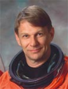

Lyndon B. Johnson Space Center
Houston, Texas 77058
|
National Aeronautics and Space Administration Lyndon B. Johnson Space Center Houston, Texas 77058 |
 |
Biographical Data |
||
Piers J. Sellers (Ph.D.)
DEPUTY DIRECTOR, SCIENCE AND EXPLORATION DIRECTORATE
NASA GODDARD SPACE FLIGHT CENTER
PERSONAL DATA: Born April 11, 1955 in Crowborough, Sussex, United Kingdom. Married. Two children.
EDUCATION: Graduated from Cranbrook School, Cranbrook, Kent, United Kingdom, in 1973; received a bachelor of science degree in ecological science from the University of Edinburgh (Scotland) in 1976 and received a doctorate in biometeorology from Leeds University (United Kingdom) in 1981.
ORGANIZATIONS: American Geophysical Union (AGU), American Meteorology Society (AMS).
AWARDS: NASA Exceptional Scientific Achievement Award in 1994; Arthur Fleming Award in 1995; Fellow of AGU in 1996; AMS Houghton Award in 1997; Fellow of AMS in 1997; Officer of the British Empire (OBE) for services to science, January 2011.
EXPERIENCE: Before joining the astronaut corps, Piers worked at NASA Goddard Space Flight Center (NASA/GSFC) on research into how the Earth’s Biosphere and Atmosphere interact. His work involved computer modeling of the climate system, satellite remote sensing studies and field work utilizing aircraft, satellites and ground teams in places such as Kansas, Russia, Africa, Canada and Brazil.
NASA EXPERIENCE: Selected as an astronaut candidate by NASA in April 1996, Piers reported to the NASA Johnson Space Center in August 1996. He completed two years of training and evaluation and was initially assigned technical duties in the Astronaut Office Computer Support Branch, followed by service in the Astronaut Office Space Station Branch. During that time, Piers worked part time in Moscow as a technical liaison on ISS computer software. Since then, Piers has served as branch chief for the ISS Operations Branch of the Astronaut Office and as an EVA instructor, among other duties. Sellers is currently serving as the deputy director of the Science and Exploration Directorate, which oversees research and mission design for the space and Earth sciences, including climate. A veteran of three space flights, Piers has logged a total of 34 days, 23 hours, 03 minutes and 56 seconds in space, including almost 41 EVA hours in six spacewalks.
SPACE FLIGHT EXPERIENCE: STS-112 Atlantis (October 7 - 18, 2002) was an International Space Station assembly mission during which the crew conducted joint operations with the Expedition-5 in delivering and installing the S-One Truss (the third piece of the 11-piece Integrated Truss Structure). To outfit and activate the new component, Sellers performed three spacewalks and logged a total of 19 hours and 41 minutes of EVA. The crew also transferred cargo between the two vehicles and used the shuttle thruster jets during two maneuvers to raise the station orbit. STS-112 was the first shuttle mission to use a camera on the external tank, providing a live view of the launch to flight controllers and NASA TV viewers. The mission was accomplished in 170 orbits, traveling 4.5 million miles in 10 days, 19 hours and 58 minutes.
STS-121 (July 4 - 17, 2006), was a return-to-flight test mission and assembly flight to the International Space Station. During the 13-day flight, the crew of Space Shuttle Discovery tested new equipment and procedures that increase the safety of space shuttles and produced never-before-seen, high-resolution images of the shuttle during and after its July 4th launch. The crew also performed maintenance on the space station and delivered and transferred more than 28,000 pounds of supplies and equipment and a new Expedition 13 crewmember to the station. Piers Sellers and Mike Fossum performed three EVAs to test the 50-ft robotic arm boom extension as a work platform. They removed and replaced a cable that provides power, command and data and video connections to the station mobile transporter rail car. They also tested techniques for inspecting and repairing the reinforced carbon-carbon segments that protect the shuttle nose cone and leading edge of the wings. The STS-121 mission was accomplished in 12 days, 18 hours, 37 minutes and 54 seconds.
STS-132 Atlantis (May 14 - 26, 2010) was the 132nd space shuttle flight and the 32nd shuttle flight to the International Space Station. STS-132 was launched from Kennedy Space Center, Florida, and docked with the International Space Station on May 16 to deliver an Integrated Cargo Carrier and a Russian-built Mini Research Module to the International Space Station. STS-132 shuttle astronauts performed three spacewalks to install a spare antenna and a stowage platform, replace batteries on the P6 truss that store solar energy and retrieve a power data grapple fixture for installation at a later date. The crew used the station robotic arm, Canadarm2, to remove Rassvet, the Russian-built mini Research Module from the shuttle’s payload bay and install it on the Zarya module. Piers Sellers served as Robotics officer and as MS-1 during Entry. The STS-132 mission was completed in 186 orbits, traveling 4,879,978 miles in 11 days, 18 hours, 28 minutes and 2 seconds.
JUNE 2011